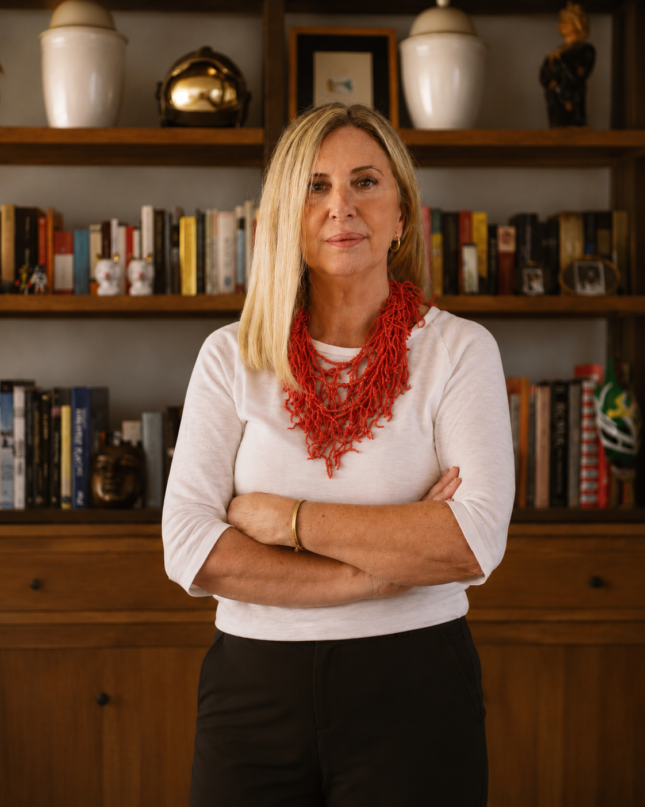

Soy consultora en desarrollo e implementación de proyectos con más de veinte años de experiencia en entornos de alta exigencia.
He trabajado construyendo carreras desde cero y acompañando a deportistas en momentos donde el resultado no es teórico. Eso implica tomar decisiones bajo presión, generar confianza en contextos altamente competitivos y sostener procesos a largo plazo donde la disciplina y el foco no son opcionales.
"He sido la única mujer en el mundo en liderar desde cero la carrera de un piloto desde los 11 años, acompañándole hasta llevarlo al mejor equipo del mundo en su categoría."
También he trabajado en la reconstrucción de la carrera de un campeón del mundo, en un momento donde ya no se trataba de crecer, sino de redefinir, reposicionar y volver a competir desde otro lugar.
Coautora — El arte de empezar de nuevo
Publicación · Junto a la Dra. María Pérez
Cada final trae consigo el poder de un nuevo comienzo. De reciente lanzamiento.
Genius DV7 School
Genius World · Valencia · En curso
Desarrollo e implementación de un proyecto que fusiona la filosofía Genius World en las escuelas de fútbol de David Villa a nivel mundial.
Documental — El fútbol moderno
Producción · En producción
Producción documental sobre la situación actual del fútbol en Europa.
Liderazgo y Salud — Programa formativo
Barcelona · Formación corporativa
Autora del programa impartido junto a la Dra. María Pérez en varias ciudades de España.
Fundadora — Audaç Women
Valencia · Plataforma de emprendimiento
Proyecto para activar y poner en marcha marcas y productos creados por mujeres.
Mánager de pilotos — Campeonato del Mundo MotoGP
Primera mujer en España · Internacional
Pionera en la gestión de pilotos de élite. Construyó desde cero la carrera de un piloto desde los 11 años hasta llevarlo al mejor equipo del mundo. También acompañó la reconstrucción de la carrera de un campeón del mundo.
Marketing deportivo — Fútbol profesional
Clubes de primera división · Internacional
Gestión de patrocinios, estrategias de comunicación y desarrollo de negocio con clubes de primer nivel e instituciones internacionales.
Lo uso como campo de entrenamiento real. He vivido desde dentro lo que significa construir resultados cuando el margen de error es mínimo y la presión es máxima.
En mis formaciones de liderazgo utilizo ejemplos vividos junto a deportistas de alto nivel para trasladar cómo se construyen el compromiso, la disciplina, la toma de decisiones bajo presión y la gestión del éxito y del fracaso.
"Mi ventaja es haber trabajado en entornos donde el resultado es real y la exigencia es máxima. Eso me permite llevar a otros proyectos no solo inspiración, sino estructura, foco y capacidad de ejecución."
Trabajemos juntosVisión estratégica
Ver el conjunto, detectar oportunidades y convertir ideas complejas en proyectos viables.
Ejecución real
No solo idear, sino bajar a tierra, estructurar, lanzar y hacer que las cosas ocurran.
Decisión bajo presión
Capacidad construida en entornos de alta exigencia donde los errores tienen consecuencias reales.
Gestión de alianzas
Conectar talento, marcas, instituciones y personas para crear proyectos con impacto real.
Adaptación al cambio
El deporte enseña que los planes cambian. Lo que no puede cambiar es la capacidad de respuesta.
Mira en qué está trabajando Julia y cómo puede ayudarte.
Ver proyectos